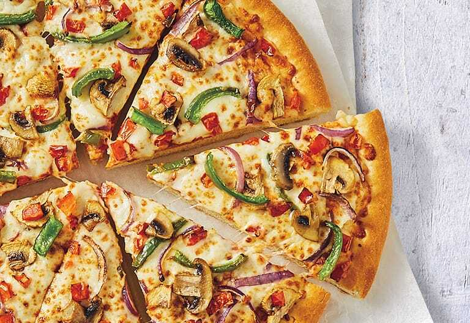

Original Pizza Hut Recipe

This homemade version of your favorite Pizza Hut Pan Pizza is so easy to make at home and the kids can personalize it with their favorite toppings
Ingredients
- 1 1/3 Cup Warm Water
- 1/4 Cup Non Fat Dry Milk or Actual Mil
- 1/2 tsp Salt
- 4 Cups Flour
- 1 Tbsp Sugar
- 1 pk Active Dry Yeast
- 2 Tbsp Oil for Dough
- 6 Tbsp Olive Oil for Pan
- 1 Bottle Pizza Sauce
- 12 Oz. Mozzarella Cheese
Below are the steps to follow for the receipe
- Put yeast, sugar, and dry milk into water, stir and allow to proof for 5 minutes until foamy and bubbly.
- In a bowl combine oil, flour and salt.
- Pour in yeast mixture and stir to combine.
- Turn out on to a flat surface and knead for about 10 minutes or use stand mixer
- Divide dough into three balls. In three 8" cake pans ( or can use 1 8 inch pie plate and 1 – 9 x 13 dish) , put 2 Tbsp of oil in each making sure it is spread evenly
- Put 2 Tbsp of oil in each pan making sure it is spread evenly
- Using a rolling pin, roll out each dough ball to about a 8" circle
- Place dough into pan.
- Cover with a plate or towel and allow to rise in a warm place for 1- 1 1/2 hours
- Spoon 1/3 cup sauce on each pizza and spread to within 1 inch of edge
- Distribute 3 oz. of shredded mozzarella cheese on each pizza
- Add favorite toppings (sausage, pepperoni, etc.)
- Top with 1 oz. mozzarella cheese
- Preheat oven to 450 degrees
- Cook until cheese is bubbling and outer crust is brown about 15 minutes
- I then brush outer edge of crust with garlic butter